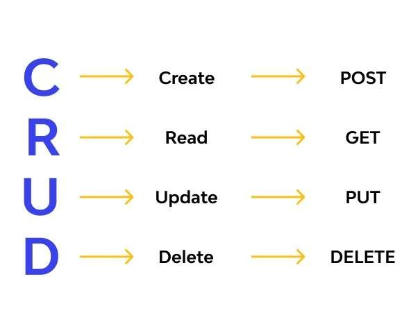

Le projet repose sur une architecture moderne basée sur Django REST Framework côté back-end. La première étape a consisté à modéliser la base de données PostgreSQL, en définissant les modèles Django représentant les entités clés des manifestations (événements, partenaires, horaires, options...).
Un diagramme UML a été conçu pour structurer les informations autour de l’entité centrale “Manif”. L’organisation des relations (activités, demandes de matériel, autorisations, rapports, etc.) permet une gestion fine et évolutive des événements.
Base de données & API
L’API REST a été implémentée grâce aux ModelViewSets de Django, avec la configuration des serializers pour exposer les données via des routes HTTP. La base de données a été testée localement avec DataGrip pour éviter toute interférence avec l’environnement de pré-production.


L’ensemble des routes de l’API ont été testées et validées via Postman, permettant d’envoyer des requêtes GET, POST, PUT, DELETE. Ces tests ont été cruciaux pour identifier des problèmes de doublons et valider la cohérence des réponses.
Grâce à ces tests et à une gestion rigoureuse des migrations, la base et l’API ont été stabilisées avant leur intégration complète au front-end développé en React.
À propos du stage
Durée : 7 semaines (mars - mai 2025)
Lieu : Pôle Numérique et Données - Montpellier Méditerranée Métropole
Équipe projet : 1 interne, 1 alternante (moi-même), 1 chef de projet, 1 responsable d’unité
Méthodologie : Agile (réunions toutes les 2 semaines, outil Bordy)
Outils utilisés : Django, PostgreSQL, React, GitLab, Figma, Postman, DataGrip